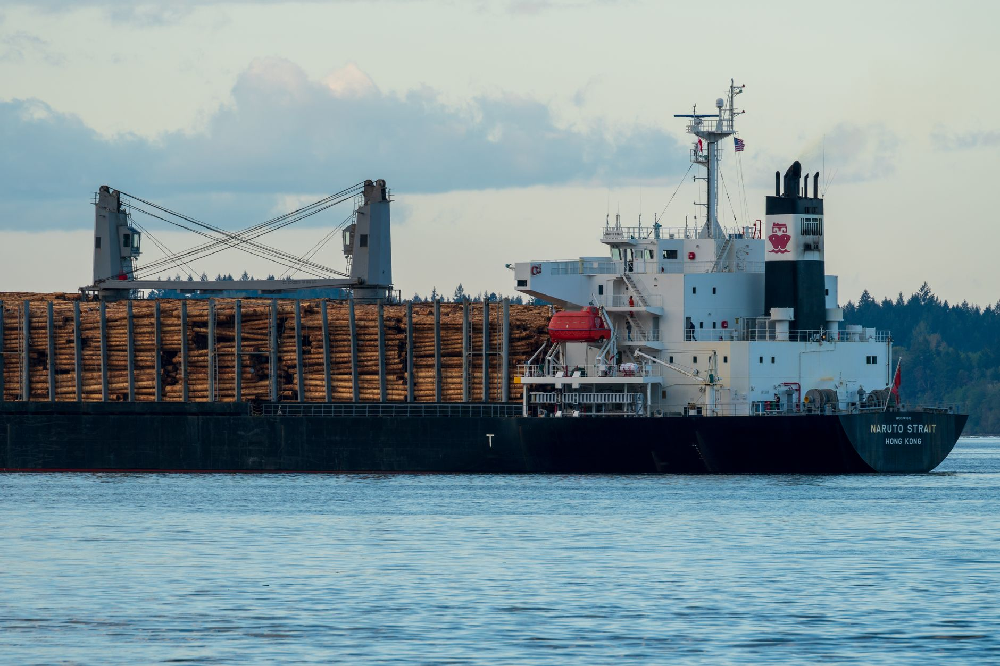

무협, 美 워싱턴서 철강·조선 통상 현안 집중 건의

한국무역협회(KITA)가 한국조선해양플랜트협회, 한국철강협회 등 국내 주요 업종별 단체와 공동으로 미국 워싱턴 D.C.를 방문해 미국 행정부 및 의회 인사들과 연쇄 접촉을 갖고 현지 통상 현안을 집중 전달했다. 이번 방문은 미국의 보호무역 기조가 강화되는 가운데 한국 핵심 산업의 수출 환경 악화를 방지하기 위한 선제적 통상 외교 활동이다.
이번 방문단의 핵심 의제는 철강 관세 문제였다. 미국은 현재 한국산 철강에 대해 '232조 관세' 쿼터 체제를 유지하고 있으며, 최근 일부 품목에 대한 추가 관세 부과 검토 움직임이 나타나고 있어 국내 철강업계의 긴장이 고조된 상태다. 한국의 대미 철강 수출액은 연간 약 30억 달러 규모로, 대미 수출 품목 중 상위권을 차지한다.
조선·해양플랜트 분야도 주요 의제로 다뤄졌다. 미국 내 조선업 재건을 위한 '미국 선박 건조 장려법(SHIPS Act)' 논의가 본격화되면서 한국 조선소들의 미국 시장 접근성에 영향을 미칠 수 있는 조항들이 포함되어 있어 협회 측이 우려 의견을 전달한 것으로 알려졌다. 한국은 현대중공업, 삼성중공업, 한화오션 등을 앞세워 글로벌 조선 1위 지위를 유지하고 있다.
무역협회 관계자는 '이번 접촉에서 미국 측은 한국의 철강·조선 분야 기여도와 동맹 관계를 감안한 합리적 접근의 필요성에 공감했다'며 '다만 구체적 조치 완화에 대해서는 추가 협의가 필요하다는 입장이어서 지속적인 후속 교섭이 필요하다'고 밝혔다. 이는 단기 해결보다는 중장기적 통상 협력 채널 구축이 중요하다는 신호로 해석된다.
미국의 통상 압박은 철강·조선에 국한되지 않고 반도체 소재, 희귀금속, 배터리 소재 등 산업 전방위로 확산되는 추세다. 인플레이션 감축법(IRA)과 반도체지원법(CHIPS Act)에 이어 핵심광물안보법 등 공급망 관련 입법이 잇따르면서 한국 소재·산업재 기업들의 대미 사업 전략도 전면 재검토가 필요한 상황이다.
국내 철강업계에서는 포스코, 현대제철 등이 미국 현지 생산·투자 확대를 통해 관세 리스크를 완화하는 전략을 모색하고 있다. 포스코는 미국 철강 기업과의 합작을 통한 현지 생산 방안을, 현대제철은 미국 전기로 제강 시설 투자를 각각 검토 중인 것으로 전해진다.
미국 측 의회 인사들은 한국 기업들의 미국 내 투자 확대와 일자리 창출 기여를 긍정적으로 평가하면서도, 무역 적자 축소를 위한 추가적인 양보를 요구하는 기류도 있는 것으로 전해졌다. 이는 2025년 이후 미국 통상 정책이 단순 관세 부과에서 투자 연계형 협상으로 무게추를 옮기고 있음을 시사한다.
글로벌 무역 환경 측면에서는 미국의 자국 산업 보호 강화가 한국뿐 아니라 일본, EU, 캐나다 등 전통 우방국들과도 마찰을 빚는 상황이다. 이에 따라 한국 정부와 업계는 양자 협의 외에도 WTO(세계무역기구) 등 다자 통상 채널을 병행 활용하는 복합적 대응 전략이 필요하다는 목소리가 높다.
전문가들은 이번 무역협회의 워싱턴 방문이 단발성 로비에 그치지 않고 지속적인 채널 유지로 이어져야 실효성을 거둘 수 있다고 강조한다. 한 통상 전문가는 '미국 의회 인사들에게 한국 산업의 공급망 기여도와 전략적 가치를 지속적으로 각인시키는 것이 장기 통상 리스크 관리의 핵심'이라고 말했다.
국내 산업재·소재 기업들은 미국 관세 리스크를 선제적으로 분산하기 위해 베트남, 멕시코 등 제3국 생산 거점 확보를 가속화하고 있다. 그러나 원산지 규정 강화 등으로 우회 수출 방식의 실효성도 점차 낮아지고 있어, 결국 미국 현지 투자 확대가 가장 현실적인 해법으로 떠오르고 있다.
향후 한미 통상 협력의 핵심 변수는 미국 대선 이후 행정부의 정책 방향과 한미 FTA 재협상 가능성이다. 업계에서는 정부가 민관 합동 통상 대응 체계를 상시화하고, 철강·조선·소재 등 주요 업종별 맞춤형 대미 통상 전략을 조속히 수립해야 한다고 촉구하고 있다.